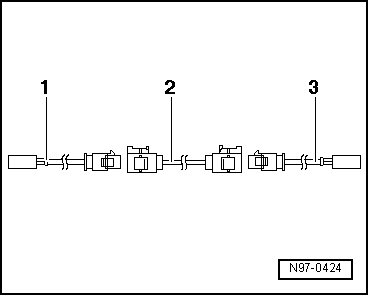

Antenna Wires
Antenna Wires
A new repair concept has been developed for repairing antenna wires. Instead of a complete antenna wire, connecting wires of different lengths and various adapter leads are now available as replacement parts.
• If a repair is necessary, antenna wires may not be repaired, but rather are to be replaced with genuine replacement parts, such as connecting wires and adapter leads.
• These genuine replacement parts are suitable for all antenna wires and wire cross sections, that require replacement.
• Connector housing for antenna wires can be obtained as a replacement part only in one color, but can be used for all antenna connector colors.
• The replacement of individual antenna connectors during repair work is not intended.
• The wires are appropriate for use on all VW models with equipped antenna wiring cross-sections.
• All adapter leads and connecting wires are suitable for various transmission and reception signals.
• This repair concept can also be used for testing or as an after market solution.
Assembly overview of antenna wire:

Example: Antenna wire from radio to antenna is faulty. The following wires are required for repair:
1. Adapter lead for connection to radio. Length approximately 30 cm.
2. Connecting wire, available in various lengths.
3. Adapter lead, for connection to antenna. Length approximately 30 cm.
Installation of a new antenna wire:
• Make sure that the total length of antenna wire can be divided into partial lengths through control modules for antenna selection, control modules for traffic monitoring or antenna amplifier. Only the defective sections need to be replaced.
- Separate the connectors of the faulty antenna wiring from their components.
- Determine the path of the faulty antenna wire in the vehicle and measure the total length of antenna wire to be replaced.
The entire length of the antenna wire consists of the length of the required adapter leads - 1 - and - 3 - as well as the connecting wire - 2 -.
- Subtract 60 cm from the total length calculation for an antenna wire to provide for the required length of connecting wire - 2 - to be installed.
- Obtain the required adapter leads - 1 - and - 3 - as well as the calculated length of connecting wire - 2 - as genuine replacement part.
- Cut the connectors off of the faulty antenna wiring.
Leave the rest of the defective antenna wire in the vehicle.
- Connect adapter leads - 1 - and - 3 - to modules in vehicle.
- Route and secure connecting wire - 2 - in the immediate vicinity of the series-installed wire routing.
• Antenna wires must not be kinked or excessively bent! The bending radius must never be below 50 mm.
- Connect the connecting wire with the adapter leads.
- Perform a function test.